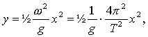

Roteres en beholder med en væske om en lodret akse, vil væskeoverfladen danne en paraboloide. Det skyldes, at et den resulterende kraft på en væskedel i overfladen er påvirket af tyngdekraften og af en trykkraft fra væsken som tilsammen giver en resulterende vandret kraft.
Forskriften for parabolen er

hvor T er omløbstiden, g tyngdeaccelerationen og x afstanden fra omdrejningsaksen.
En roterende Hg-overflade udgør et perfekt astronomisk spejl. Det bruges faktisk i praksis, se reference.
Man kan lave sit eget spejl ved hjælp af en gammel plasticspand, ca. 20 cm i diameter, noget lim, en gammel grammofon og sølvpapir.
Skær de nederste 5 cm af plasticspanden og smid resten væk. Anbring spanden, så den står centreret på grammofonen. Bland så meget lim, at det vil danne et 0,5 cm tykt lag på midten, når grammofonen kører med 33 omdrejninger i minuttet. Man skal passe på, at der ikke kommer bobler i limen, de kan efterlade kratere i overfladen! Efter ca. et døgn er limen fast. Spejlet kan belægges med sølvpapir eller forsølves, se reference.
Udregn brændvidden for spejlet ud fra parablens ligning.
Mål brændvidden eksperimentelt og sammenlign med teoretisk værdi.
Reference: Scientific American, februar 1994, Making a Mirror by Spinning a Liquid.
I samme nummer:
Liquid Mirrors by Ermano F. Borra: Light, liquid-mercury mirrors, which can potentially be made much larger than glass mirrors, may enable astronomers to construct enormous telescopes and see farther than ever before.